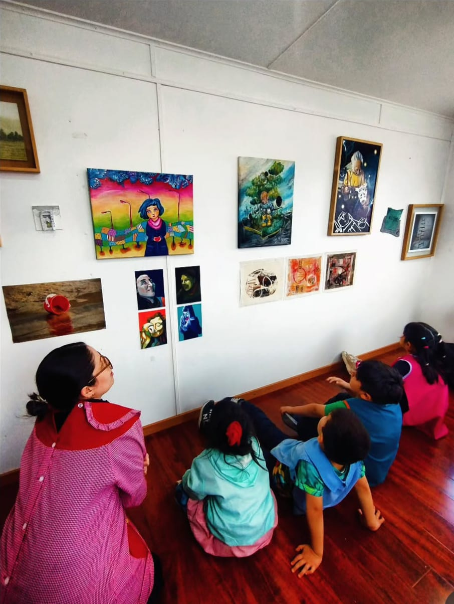
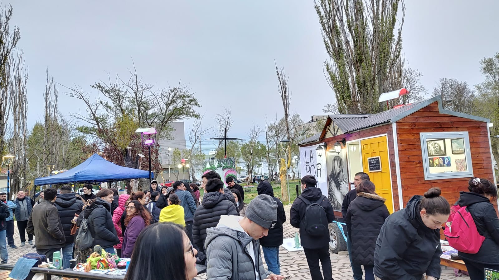
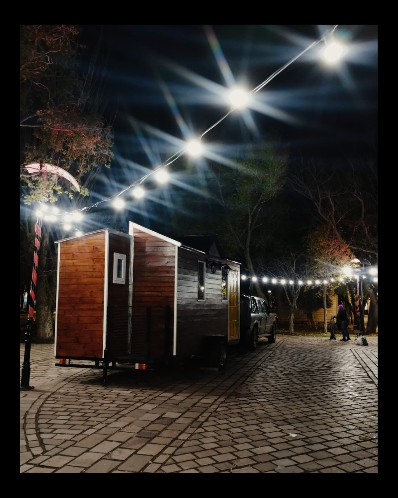
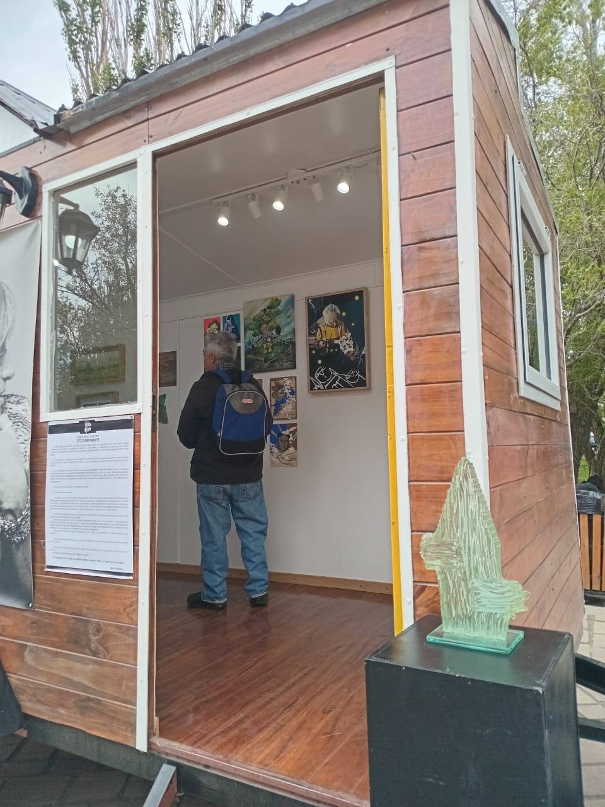
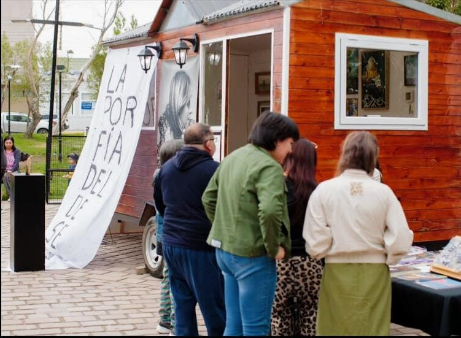
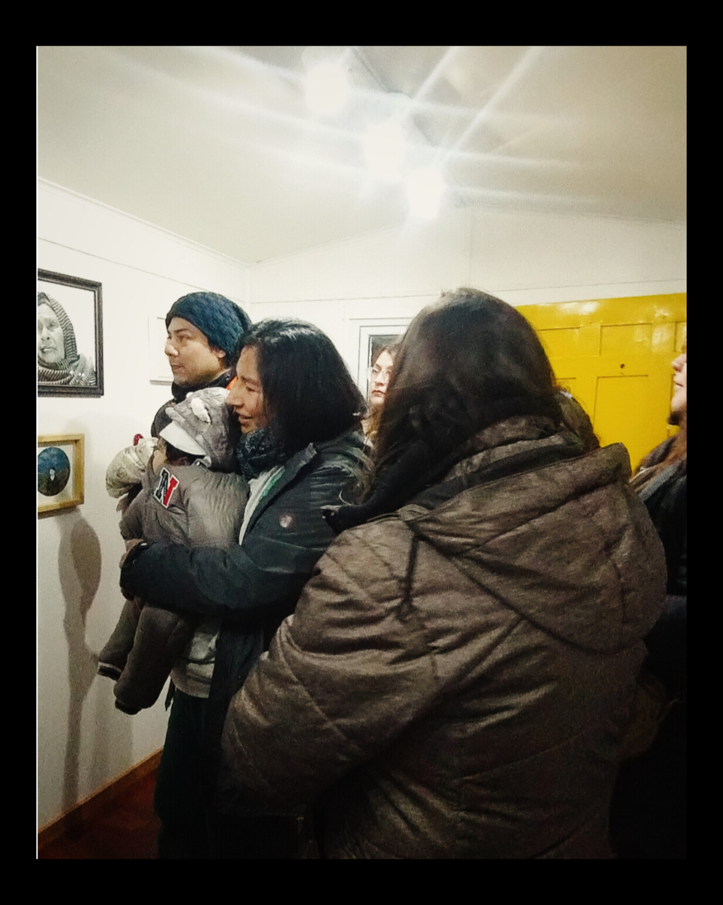
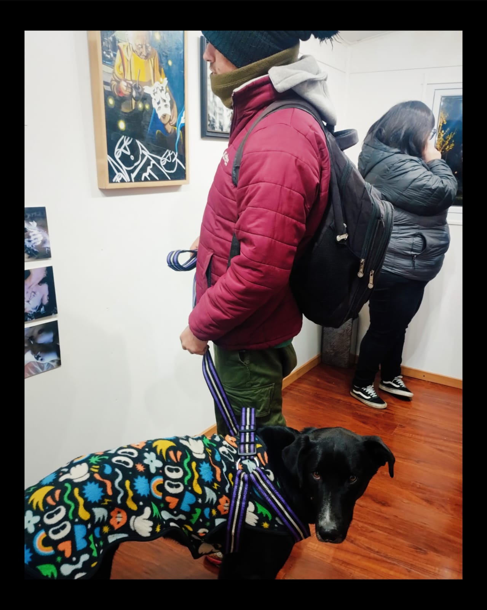
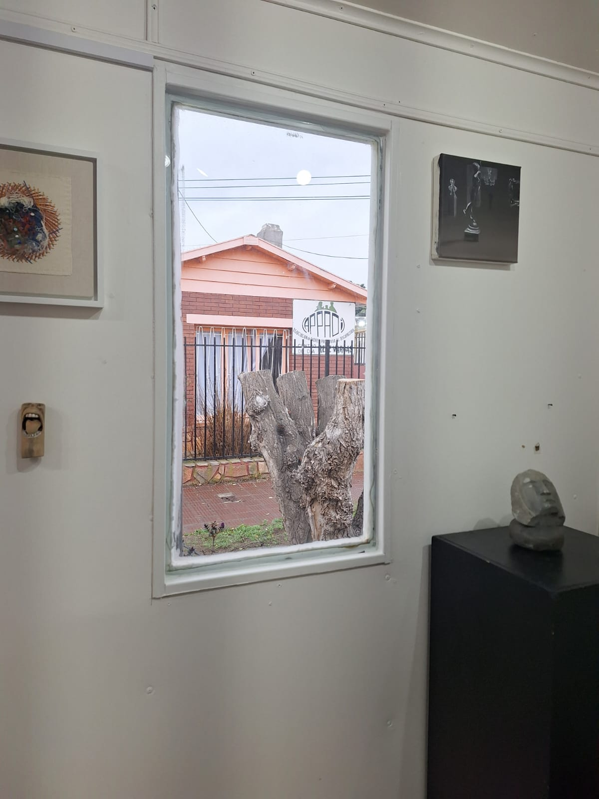
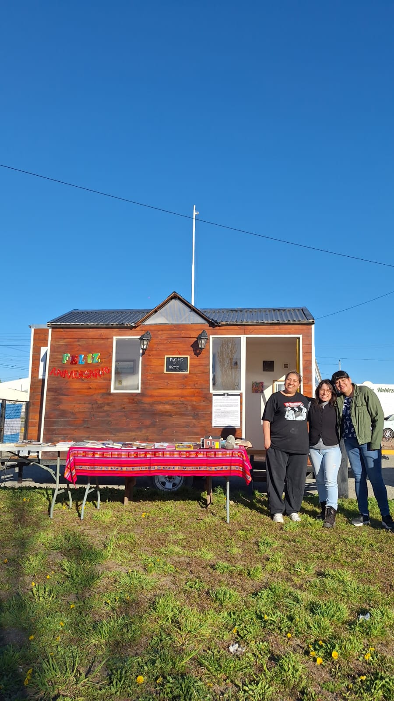
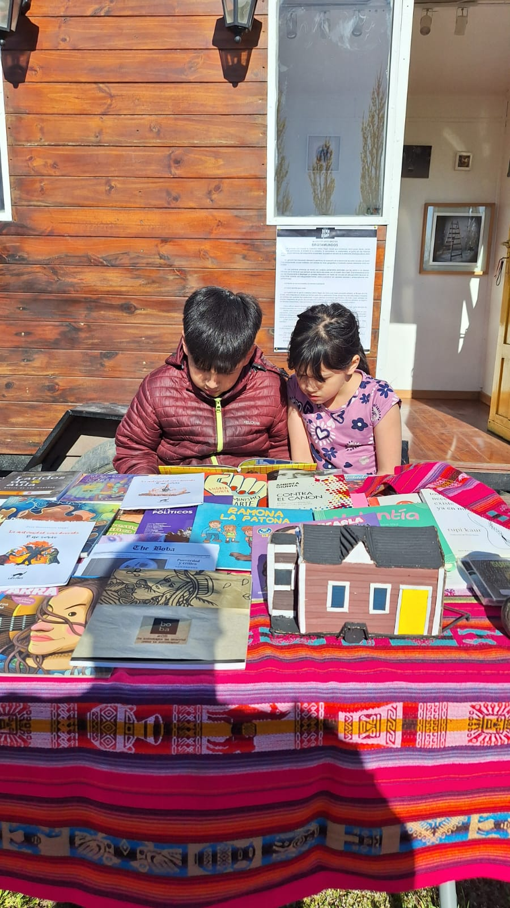

<!DOCTYPE html>
<html lang="en">
<head>
    <meta charset="UTF-8">
    <meta name="viewport" content="width=device-width, initial-scale=1.0">
    <title>Open Street Map</title>
    
    <!-- Leaflet CSS -->
    <link rel="stylesheet" href="https://unpkg.com/leaflet@1.9.4/dist/leaflet.css" 
    integrity="sha256-p4NxAoJBhIIN+hmNHrzRCf9tD/miZyoHS5obTRR9BMY=" crossorigin="" />

    <style>
        html, body {
            height: 100%;
            margin: 0;
            padding: 0;
        }

        #mi_mapa {
            height: 100vh;
            width: 100vw;
        }
    </style>
</head>

<body>

    <div id="mi_mapa"></div>
    
    <!-- Leaflet JS -->
    <script src="https://unpkg.com/leaflet@1.9.4/dist/leaflet.js" 
    integrity="sha256-20nQCchB9co0qIjJZRGuk2/Z9VM+kNiyxNV1lvTlZBo=" crossorigin=""></script>
    
    <script>
        let map = L.map('mi_mapa').setView([-51.621640, -69.215139], 13);

        // Usamos Esri World Street Map (Libre, sin API Key y sin bloqueos de IP)
        L.tileLayer('https://server.arcgisonline.com/ArcGIS/rest/services/World_Street_Map/MapServer/tile/{z}/{y}/{x}', {
            maxZoom: 19,
            attribution: 'Tiles &copy; Esri &mdash; Source: Esri, DeLorme, NAVTEQ, USGS, Intermap, iPC, NRCAN, Esri Japan, METI, Esri China (Hong Kong), and the GIS User Community'
        }).addTo(map);

        // Marcadores en Río Gallegos
        L.marker([-51.614512, -69.256198]).addTo(map)
         .bindTooltip("Jardín de Infantes Nº 66 Yeno Kayken", {permanent: true, direction: "top"})
         .bindPopup(`
            <div style="text-align: center;">
            <h3 style="margin-bottom: 5px;">Jardín de Infantes Nº 66 Yeno Kayken</h3>
            
            <p style="margin: 0;">05/12/25 Primera inserción institucional, visitamos el jardin de infantes del turno de mañana y de tarde, todas las salas</p>
            </div>
        `);

        L.marker([-51.623288, -69.215927]).addTo(map)
         .bindTooltip("Plaza General Jose de San Martín", {permanent: true, direction: "top"})
         .bindPopup(`
            <div style="text-align: center; max-width: 220px;">
              <h3 style="margin-bottom: 5px;">Plaza General Jose de San Martín</h3>
              
              <!-- Carrusel deslizable -->
              <div style="display: flex; overflow-x: auto; scroll-snap-type: x mandatory; gap: 8px; width: 100%; max-width: 220px; scrollbar-width: thin; margin-bottom: 5px;">
                
                <!-- Foto 1 y su texto -->
                <div style="flex: 0 0 100%; width: 100%; scroll-snap-align: center;">
                  
                  <p style="font-size: 12px; margin: 0;">17/10/25 Inauguración del MABs</p>
                </div>
                
                <!-- Foto 2 y su texto -->
                <div style="flex: 0 0 100%; width: 100%; scroll-snap-align: center;">
                  
                  <p style="font-size: 12px; margin: 0;">17/10/25 Inauguración del MABs</p>
                </div>

                <!-- Foto 3 y su texto -->
                <div style="flex: 0 0 100%; width: 100%; scroll-snap-align: center;">
                  
                  <p style="font-size: 12px; margin: 0;">30/11/25 Muestra patrimonial y biblioteca</p>
                </div>

                <!-- Foto 4 y su texto -->
                <div style="flex: 0 0 100%; width: 100%; scroll-snap-align: center;">
                  
                  <p style="font-size: 12px; margin: 0;">30/11/25 Muestra patrimonial y biblioteca</p>
                </div>

                <!-- Foto 5 y su texto -->
                <div style="flex: 0 0 100%; width: 100%; scroll-snap-align: center;">
                  
                  <p style="font-size: 12px; margin: 0;">16/05/26 Noche de los museos donde participó el MABs por primera vez</p>
                </div>

                <!-- Foto 6 y su texto -->
                <div style="flex: 0 0 100%; width: 100%; scroll-snap-align: center;">
                  
                  <p style="font-size: 12px; margin: 0;">16/05/26 Noche de los museos donde participó el MABs por primera vez</p>
                </div>

              </div>
            </div>
        `);

        L.marker([-51.617692, -69.205976]).addTo(map)
         .bindTooltip("Parque Héctor Pirincho Roquel", {permanent: true, direction: "top"});

        L.marker([-51.640387, -69.190846]).addTo(map)
         .bindTooltip("Cancha - Plaza 'Marito Romero'", {permanent: true, direction: "bottom"});

        L.marker([-51.640662, -69.196478]).addTo(map)
         .bindTooltip("Plaza Arco Iris", {permanent: true, direction: "top"});

        L.marker([-51.634276, -69.207604]).addTo(map)
         .bindTooltip("Jardín de Infantes Nº 37 'Evita'", {permanent: true, direction: "top"});

        L.marker([-51.61505682034479, -69.2181149639021]).addTo(map)
         .bindTooltip("Centro de Dia 'René Vargas'", {permanent: true, direction: "top"})
         .bindPopup(`
            <div style="text-align: center;">
            <h3 style="margin-bottom: 5px;">Centro de Dia 'René Vargas'</h3>
            
            <p style="margin: 0;">19/06/26 Estuvimos de visita en APADI invitadas por el profesor y artista Matias Molina.</p>
            </div>
        `);

         L.marker([-51.633692515710145, -69.22120469568183]).addTo(map)
         .bindTooltip("Plaza De Los Angeles", {permanent: true, direction: "top"})
         .bindPopup(`
            <div style="text-align: center; max-width: 220px;">
              <h3 style="margin-bottom: 5px;">Plaza De Los Angeles</h3>
              
              <!-- Carrusel deslizable -->
              <div style="display: flex; overflow-x: auto; scroll-snap-type: x mandatory; gap: 8px; width: 100%; max-width: 220px; scrollbar-width: thin; margin-bottom: 5px;">
                
                <!-- Foto 1 y su texto -->
                <div style="flex: 0 0 100%; width: 100%; scroll-snap-align: center;">
                  
                  <p style="font-size: 12px; margin: 0;">17/10/26 1º Aniversario MABs</p>
                </div>

                <!-- Foto 2 y su texto -->
                <div style="flex: 0 0 100%; width: 100%; scroll-snap-align: center;">
                  
                  <p style="font-size: 12px; margin: 0;">Niñeces que se acercan curiosos</p>
                </div>

              </div>
            </div>
        `);
    </script>
</body>
</html>